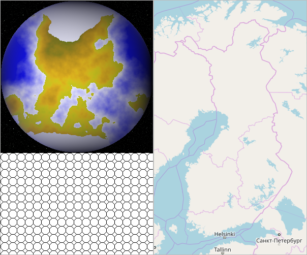

Demo¶
NutShell installation package comes with five demo products under directory $NUTSHELL_DIR/demo/products/.
This directory is set also in configuration file nutshell-demo.cnf .
Demo products¶
The demo contains five sample products (with requirements shown as footnotes):
demo.image.ppmforge– Linux/Unix program generating fractal clouds and planets [ppmforge], [convert]demo.image.pattern– Image Magick’s convert creating built-in patterns [convert]demo.maps– Map creation based on open map data and WMS servers [wget], [convert]demo.cloudy– An artifical “weather map” combining outputs of the above three [convert]demo.cloudy.anim– Animated (GIF) series ofdemo.cloudy[convert]
Examples of the three first products are shown in the image below.
HTML demo page¶
The demo includes an interactive HTML page which can be started with
python3 -m nutshell.httpd -c nutshell-demo.cnf
and appears in http://127.0.0.1:8088/index.html or other address configured (see Configuration).
On the HTML demo page, one can change the values using HTML widgets and
then click Update to regenerate them. The respective
filename – that is, $OUTFILE which identifies a product instance in NutShell –
becomes updated in the text slot at the top of the page.
There, it can be further edited for testing purposes. The HTML widgets
on the page do not cover all the options supported by the generator scripts.
Further, the scripts do not cover all the functionalities of the wrapped
original programs.
Command line examples¶
The demo products can be generated using the command line, for example:
# cd $NUTSHELL_DIR/
python3 -m nutshell.nutshell -c nutshell-demo.cnf --make \
--product demo.image.pattern_WIDTH=300_HEIGHT=200_PATTERN=OCTAGONS.png
# 'make' is default action, and also --product can be omitted:
python3 -m nutshell.nutshell -c nutshell-demo.cnf \
202005121245_demo.image.ppmforge_SEED=1234_WIDTH=300.png
python3 -m nutshell.nutshell -c nutshell-demo.cnf \
demo.map_BBOX=19,59,32,71_SIZE=300,500_CONF=geoserver_PROJ=4326.png
python3 -m nutshell.nutshell -c nutshell-demo.cnf \
2020050800_demo.cloudy_SIZE=800,600.jpg
A quick look behind the hood¶
On the system side, the product generators – the generate.sh scripts generating the products –
can be found under $NUTSHELL_DIR/demo/products/. All of them reside under directory
./demo meaning that one can include them in an operative NutShell product directory
simply by linking: $NUTSHELL_DIR/products/demo -> $NUTSHELL_DIR/demo/products/demo/ .
Product generators¶
The first three are independent products in a sense that they do not need other NutShell products as input. In addition, following NutShell design recommendation, the scripts can be run on the command line. For example:
cd $NUTSHELL_DIR/demo/products/demo/image/ppmforge/
./generate.sh
# The script essentially constructs and runs a command line...
ppmforge -seed '1001' -inclination 0 -dimension '2.2' \
-power '1.0' -hour '12.00' -width '256' -height '256'
# ... output of which is conversed to a PNG image:
convert ppm:- ./test.png
Further, one can (in bash) add parameters – communicated as environment variables in Nutshell –
as a prefix, for example: HOUR=15 MINUTE=45 SIZE=512,512 ./generate.sh .
The fourth product, “Cloudy” or demo.cloudy, combines outputs of the first three ones.
It overlays a fractal cloud image by demo.image.ppmforge masked with a hatch pattern by
demo.image.pattern over a map generated by demo.maps .
Input queries¶
Product input requests are communicated to NutShell server with input declaration script
input.sh which the developer can freely
design to produce <KEY=VALUE> lines as output. As initialisation from NutShell,
this script gets the
same parameters (environment variables) as the actual generator script (generate.sh).
Again, a good policy is to define default values for variables so that input declarations
can be tested on command line without parameters, for example:
cd $NUTSHELL_DIR/demo/products/demo/cloudy
./input.sh
# Answers:
CLOUD=202005121245_demo.image.ppmforge_MODE=clouds_GRAY=True_DIMENSION=2_SIZE=256,256.png
HATCH=demo.image.pattern_SIZE=256,256_PATTERN=LEFT45.png
MAP=demo.map_BBOX=0,45,32,71_SIZE=256,256_CONF=geoserver_PROJ=4326.png
Again, one can experiment with parameters with prefixes, for example:
TIMESTAMP=201708121600 SIZE=512,512 PATTERN=OCTAGONS ./input.sh
In building the product (here demo.cloudy), NutShell calls first its input declaration script and generates
the desired products. Then, it assigns their full system side paths in desired variables
– HATCH, CLOUD, and MAP in this case – in environment variables and forwards them
among other product parameters to generate.sh for generating the actual product.
The developer can rather freely select variable names, excluding system variables like TIMESTAMP.
In input variable names, one may also use underscores '_'
since they will not end up filename parsing using splitting by underscore.
More on system and user variables is explained in NutShell Variables.
Helper programs¶
These packages can be installed from standard distributions for example with apt install <package> .
| [convert] | (1, 2, 3, 4, 5) – Convert between image formats as well as resize an image, blur, crop, despeckle, dither, draw on, flip, join, re-sample, and much more. ImageMagick, 1 October 2009 |
| [ppmforge] | – Fractal forgeries of clouds, planets, and starry skies. John Walker, 25 October 1991. |
| [wget] | HTTP retrieval program |